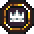
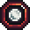
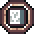
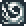
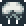
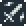
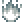

HOME'S JOURNEY
HOME'S JOURNEYTurn 1 · TEA
Battle Log
Two factions: the Tavern and Jeet. Each faction has its own followers, Artifacts, Worlds, and Spells to claim victory in the Great Confrontation. Currently the first game mode is available — Hot Seat — along with a starter set of 91 cards. In the future: AI opponent, Online play, and new card expansions.
Two players take turns on one device. Player 1 plays as the Tavern and receives 45 cards, Player 2 plays as Jeet and has 46 cards in their deck. Each player's base starts at 20 HP. You build a field of Common and Unique Travelers, cast spells, activate artifacts and worlds. The first to bring the opponent's base to zero wins.
Every card shows: cost (top left — how much Essence to play it), card type (top right), art in the center, tags nearby indicating the card's abilities, then the name, and for creatures — Health/HP (heart) and Attack/ATK (sword) at the bottom. Below that is the ability text describing what the card does.
Before the game begins, each player sees their opening hand of 5 cards and may shuffle it back and draw a new one — up to 3 times. The first reshuffle has no penalty. After the 2nd you receive 1 card fewer, after the 3rd attempt 2 fewer. Mulligan is optional: if you're happy with your hand, just press Ready. Once both players confirm — the game begins.
Essence is your resource. You start with a maximum of 1 and gain +1 each turn — so by turn 5 you have 5 Essence to spend. It fully refills at the start of every turn. Spend your Essence to play a chosen card by pressing Play.
Once per turn you may burn a card from your hand: it goes to the Void forever, but your Essence maximum permanently increases by 1. Press Burn above the chosen card to do so.
You draw 1 card from your deck at the start of each turn.
Some Travelers and Artifacts have a special action you trigger manually by tapping the card and selecting the ability button that appears. Active abilities cost no Essence, but can only be used once per turn instead of attacking — after which the creature is considered exhausted.
The Graveyard holds only creatures killed in battle. They can be revived. The Void holds burned cards, played spells, and replaced worlds — nothing can retrieve them.

Common and Unique TravelersThese are creature cards placed on the field. When played, they enter in a sleeping state and cannot act until your next turn. To attack: tap the creature, then tap an available enemy card or the opponent's Base at the top — after which the creature becomes exhausted and can act again next turn. When a creature attacks, the defender strikes back simultaneously. Creatures killed in battle go to the Graveyard and may be revived.
Spells take effect the moment they're played — drawing cards, reviving a fallen ally, bonus Essence, returning all field cards to hand — then disappear into the Void. They leave nothing on the battlefield.

WorldsA World is a permanent card that sits below your field and passively affects the game while active. Only one World can be active at a time. Playing a second replaces the first — the old one goes to the Void.

ArtifactsArtifacts also sit below the field, but up to two can be active at once. Some trigger automatically each turn (draw, heal). Others are active — tap them to use their ability once per turn. Artifacts sleep their first turn, just like creatures.

VanguardThe creature can act on the same turn it enters the field. It skips the sleeping state.
The creature entered the field this turn and cannot act. It wakes up at the start of your next turn.
The creature has already attacked or used an active ability this turn. It cannot act again until next turn. Shown with reduced opacity.

ProvokeAll enemy attacks must target this creature.
All attacks, including creatures with Pierce, must target this creature.
This creature ignores Provoke and can attack the base or any enemy directly.
When this creature attacks, the target becomes Feared: it skips its next turn and deals no counter-attack damage.
This creature cannot be targeted while other allies are on the field. When it becomes the last one standing, it can be targeted normally. It also takes no counter-attack damage when attacked.

RageEach time this creature attacks, it permanently gains +1 ATK. The bonus accumulates but resets if the creature dies and is revived.

BurnWhen this creature attacks, the target catches fire. Burning creatures lose 1 HP at the start of each of their turns. The effect is permanent until death. A creature that dies from burning goes to the Void.
The creature restores X HP to itself at the start of each of your turns, up to its maximum.
A passive field effect that buffs all allies while the aura card is on the field. The bonus disappears immediately when the card leaves. Multiple aura sources stack. An aura does not buff itself — only allies.
When 3 or more Travelers of the same Gate type are on your field simultaneously, they all automatically receive a bonus. The bonus activates the moment the third arrives and disappears as soon as the squad drops below three. Each squad has its own type of bonus.
The different forms of Travelers. You can easily tell them apart by their shape. There are 6 main Gate types: Szarg, Xuiqtr, Umbasir, Mechird, Orbiton, Dreegan.
Some abilities increase a creature's maximum HP. If the creature is at full health, current HP rises too (3/3 becomes 4/4). If already wounded, only the maximum grows (2/3 becomes 2/4).
Returns a creature from the Graveyard to the field with X HP. It enters in a sleeping state and can act next turn. Revived creatures do not trigger On Enter effects.
Returns a card from the battlefield to the player's hand.
Intentionally destroy one of your own creatures. It goes to the Graveyard and can be revived. Some artifacts require a sacrifice to activate.
The effect triggers automatically at the start of your turn, before any actions.
The effect triggers the moment the card is played from hand to the field. Does not trigger on revives or raises from the graveyard.
The effect triggers each time this creature attacks — whether targeting an enemy creature or the base.
The effect triggers when this creature's attack kills an enemy creature directly.
Два фракции: Таверна и Ядро Джит. Каждая из фракций имеет своих последователей, а также Артефакты, Миры и Заклинания, чтобы одержать победу в Великом противоборстве. На данный момент реализован первый режим игры — Горячий стул и стартовая колода включающая 91 карту. В будущем будет добавлена возможность играть против ИИ, игра Онлайн, а также новые дополнительные издания карт.
Два игрока на одном устройстве ходят по очереди. Игрок 1 играет за Таверну и получает 45 карт, Игрок 2 играет за Ядро Джит и имеет 46 карт в своей колоде. У каждого база с 20 максимального здоровья. Вы строите поле из Рядовых и Уникальных Путешественников, разыгрываете заклинания, активируете артефакты и миры. Первый кто сведёт базу противника к нулю — побеждает.
Каждая карта показывает: стоимость (верхний левый угол — сколько Эссенции нужно для игры), Тип карты (верхний правый угол), Арт в центре, рядом могут быть Тэги обозначающие присущие карте Способности, далее Название, для существ — Здоровье/HP (сердце) и Атака/ATK (меч) внизу. Ниже — текст способности, описывающий что делает карта.
До начала игры каждый игрок видит свою начальную руку из 5 карт и может перетасовать её обратно в колоду и взять новую — до 3х раз. Первая перетасовка не имеет штрафа, после 2й вы получите на 1 карту меньше, после 3й попытки на 2 меньше. Мулиган не обязателен: если рука устраивает, просто нажмите Ready. Когда оба игрока подтверждают готовность — игра начинается.
Эссенция — ваш ресурс. Вы начинаете с максимумом 1 и получаете +1 каждый ход — то есть к 5-му ходу у вас 5 Эссенции. Она полностью восполняется в начале каждого хода. Вы можете тратить ваш запас Эссенции, чтобы сыграть выбранную вами карту — нажав Play.
Один раз за ход вы можете сжечь карту из руки: она уходит в Пустоту навсегда, но максимум Эссенции будет увеличен на 1. Нажмите Burn над выбранной картой для этого.
Вы будете получать в начале каждого хода 1 карту из колоды.
У некоторых Путешественников и Артефактов есть специальное действие, которое вы запускаете вручную нажав на карту и выбрав появившуюся кнопку способности. Активные способности не стоят Эссенции, но могут использоваться лишь раз за ход, вместо атаки — после этого существо будет считаться уставшим.
Кладбище хранит только существ убитых в бою. Их можно воскресить. Пустота хранит сожжённые карты, сыгранные заклинания и заменённые миры — ничто не может их вернуть.
Это карты-существа выставляемые на поле. При игре они выходят на поле в состоянии сна и не могут действовать до следующего вашего хода. Чтобы атаковать существом: нажмите на него, затем на доступную для атаки карту противника или его Базу сверху — после этого существо будет считаться уставшим. Когда существо атакует, защитник бьёт в ответ одновременно. Существа убитые в бою уходят на Кладбище и могут быть воскрешены.
Заклинания срабатывают в момент розыгрыша — добор карт, воскрешение павшего союзника, бонусная Эссенция, возврат всех карт с поля в руки — после чего уходят в Пустоту. На поле они не остаются.
Мир — постоянная карта, которая лежит под вашим полем и пассивно влияет на игру пока активна. Одновременно может быть только один Мир. Если сыграть второй — первый уходит в Пустоту.
Артефакты тоже лежат под полем, но одновременно может быть активно до двух. Одни срабатывают автоматически каждый ход (добор, лечение). Другие — активные: нажмите на них чтобы использовать способность раз за ход. Артефакты спят в первый ход, как существа.
Существо может действовать в тот же ход когда вышло на поле. Оно пропускает состояние сна.
Существо вышло на поле в этот ход и не может действовать. Просыпается в начале вашего следующего хода.
Существо уже атаковало или использовало активную способность в этот ход. Не может действовать снова до следующего хода. Отображается сниженной прозрачностью.
Все атаки врагов должны быть направлены на это существо.
Все атаки, включая существ с Пронзанием, обязаны нацеливаться на это существо.
Существо игнорирует Провокацию и может атаковать базу или любого врага напрямую.
Когда это существо атакует, цель оказывается в Страхе: пропускает следующий ход и не наносит ответного урона. Существо в Страхе не может контратаковать.
Существо не может быть выбрано целью для атаки пока на поле есть другие союзники. Когда оно становится последним — его можно атаковать. Также не получает ответного урона при атаке на него.
Каждый раз когда это существо атакует, оно навсегда получает +1 ATK. Бонус накапливается, но сбрасывается если существо умирает и воскресает.
Когда это существо атакует, цель загорается. Горящие существа теряют 1 HP в начале каждого своего хода. Эффект постоянный до смерти существа. Умерев от горения карта попадает в Пустоту.
Существо восстанавливает себе X HP в начале каждого вашего хода, до максимума.
Пассивный эффект поля, который усиливает всех союзников пока карта с аурой на поле. Бонус исчезает немедленно когда карта покидает поле. Несколько источников ауры складываются. Аура не усиливает саму себя — только союзников.
Когда на вашем поле одновременно стоят 3 и более Путешественника одного типа Врат, все они автоматически получают бонус. Бонус активируется в момент выхода третьего и исчезает как только отряд становится меньше трёх. У каждого отряда свой тип бонуса.
Разные виды формы Путешественников. Вы можете легко отличить их друг от друга по форме. Всего 6 типов основных Врат: Szarg, Xuiqtr, Umbasir, Mechird, Orbiton, Dreegan.
Некоторые способности увеличивают максимальное HP существа. Если существо полностью здорово — текущее HP тоже растёт (3/3 становится 4/4). Если уже ранено — растёт только максимум (2/3 становится 2/4).
Возвращение существа с Кладбища на поле с X HP. Оно выходит в состоянии сна и готово действовать в следующий ход. Воскрешённые существа не запускают эффекты «При выходе».
Возвращение карты с поля боя в руку игрока.
Уничтожить одно из своих существ намеренно. Оно уходит на Кладбище и может быть воскрешено. Некоторые артефакты требуют жертвы для активации.
Эффект срабатывает автоматически в начале вашего хода, до любых действий.
Эффект срабатывает в момент игры карты из руки на поле. Не срабатывает при воскрешении или подъёме с кладбища.
Эффект срабатывает каждый раз когда это существо атакует — будь то вражеское существо или база.
Эффект срабатывает когда атака этого существа убивает вражеское существо напрямую.
Duas facções: a Taverna e Jeet. Cada facção tem seus próprios seguidores, Artefatos, Mundos e Feitiços para conquistar a vitória na Grande Confrontação. Atualmente o primeiro modo de jogo está disponível — Hotseat — junto com um conjunto inicial de 91 cartas. No futuro: oponente IA, jogo Online e novas expansões de cartas.
Dois jogadores se alternam em um dispositivo. Jogador 1 joga como a Taverna e recebe 45 cartas, Jogador 2 joga como Jeet e tem 46 cartas no baralho. A base de cada jogador começa com 20 HP. Você constrói um campo com Viajantes Comuns e Únicos, lança feitiços, ativa artefatos e mundos. O primeiro a zerar a base do oponente vence.
Cada carta mostra: custo (canto superior esquerdo — quanta Essência é necessária), tipo de carta (canto superior direito), arte no centro, tags indicando as habilidades, depois o nome, e para criaturas — Saúde/HP (coração) e Ataque/ATK (espada) na parte inferior. Abaixo está o texto da habilidade.
Antes do jogo começar, cada jogador vê sua mão inicial de 5 cartas e pode embaralhar de volta e comprar uma nova — até 3 vezes. A primeira não tem penalidade. Após a 2ª você recebe 1 carta a menos, após a 3ª tentativa 2 a menos. O mulligan é opcional. Quando ambos confirmam — o jogo começa.
Essência é seu recurso. Você começa com máximo 1 e ganha +1 a cada turno — no turno 5 você tem 5 de Essência. Ela recarrega completamente no início de cada turno. Gaste sua Essência para jogar uma carta pressionando Play.
Uma vez por turno você pode queimar uma carta da mão: ela vai para o Vazio para sempre, mas seu máximo de Essência aumenta permanentemente em 1. Pressione Burn acima da carta escolhida.
Você compra 1 carta do baralho no início de cada turno.
Alguns Viajantes e Artefatos têm uma ação especial que você ativa manualmente tocando na carta e selecionando o botão de habilidade. Habilidades ativas não custam Essência, mas só podem ser usadas uma vez por turno em vez de atacar — após isso a criatura fica exausta.
O Cemitério guarda apenas criaturas mortas em batalha. Elas podem ser revividas. O Vazio guarda cartas queimadas, feitiços jogados e mundos substituídos — nada pode recuperá-los.
São cartas de criaturas colocadas no campo. Quando jogadas, entram em estado de sono e não podem agir até seu próximo turno. Para atacar: toque na criatura, depois em uma carta inimiga disponível ou na Base do oponente no topo — após isso a criatura fica exausta. Quando ataca, o defensor contra-ataca simultaneamente. Criaturas mortas vão para o Cemitério.
Têm efeito imediato — comprar cartas, reviver aliado, Essência bônus, retornar todas as cartas do campo para a mão — depois vão para o Vazio.
Carta permanente que fica abaixo do seu campo e afeta o jogo passivamente. Apenas um Mundo ativo por vez. Jogar um segundo substitui o primeiro.
Também ficam abaixo do campo, até dois ativos simultaneamente. Alguns disparam automaticamente a cada turno. Outros são ativos — toque para usar uma vez por turno. Artefatos dormem no primeiro turno.
A criatura pode agir no mesmo turno em que entrou no campo. Ignora o estado de sono.
A criatura entrou no campo neste turno e não pode agir. Acorda no início do seu próximo turno.
A criatura já atacou ou usou habilidade ativa neste turno. Não pode agir novamente até o próximo turno. Mostrada com opacidade reduzida.
Todos os ataques inimigos devem mirar nesta criatura.
Todos os ataques, incluindo criaturas com Perfurar, devem mirar nesta criatura.
Esta criatura ignora Provocar e pode atacar a base ou qualquer inimigo diretamente.
Quando esta criatura ataca, o alvo fica Amedrontado: pula seu próximo turno e não causa dano de contra-ataque.
Esta criatura não pode ser escolhida como alvo enquanto houver aliados no campo. Quando for a última, pode ser atacada normalmente. Também não recebe dano de contra-ataque.
Cada vez que esta criatura ataca, ganha permanentemente +1 ATK. O bônus acumula mas é resetado se morrer e for revivida.
Quando esta criatura ataca, o alvo pega fogo. Criaturas em chamas perdem 1 HP no início de cada turno. Efeito permanente até a morte. Uma criatura que morre pelo fogo vai para o Vazio.
A criatura restaura X HP para si mesma no início de cada um dos seus turnos, até o máximo.
Efeito de campo passivo que fortalece todos os aliados enquanto a carta com aura estiver no campo. O bônus desaparece quando a carta sai. Múltiplas auras acumulam. A aura não fortalece a si mesma.
Quando 3 ou mais Viajantes do mesmo tipo de Portal estão no seu campo simultaneamente, todos recebem um bônus automaticamente. O bônus ativa quando o terceiro chega e desaparece quando o esquadrão cai abaixo de três.
As diferentes formas dos Viajantes. Há 6 tipos principais: Szarg, Xuiqtr, Umbasir, Mechird, Orbiton, Dreegan.
Algumas habilidades aumentam o HP máximo de uma criatura. Se estiver com saúde plena, o HP atual também sobe (3/3 vira 4/4). Se já estiver ferida, apenas o máximo cresce (2/3 vira 2/4).
Retorna uma criatura do Cemitério ao campo com X HP. Entra em estado de sono. Criaturas revividas não disparam efeitos Ao Entrar.
Retorna uma carta do campo para a mão do jogador.
Destruir intencionalmente uma de suas criaturas. Vai para o Cemitério e pode ser revivida. Alguns artefatos requerem sacrifício para ativar.
O efeito dispara automaticamente no início do seu turno, antes de qualquer ação.
O efeito dispara quando a carta é jogada da mão para o campo. Não dispara em revividas.
O efeito dispara cada vez que esta criatura ataca — seja criatura inimiga ou base.
O efeito dispara quando o ataque desta criatura mata uma criatura inimiga diretamente.
Hai phe: Quán Trọ và Jeet. Mỗi phe có những người theo dõi riêng, Vật Phẩm, Thế Giới và Phép Thuật để giành chiến thắng trong Cuộc Đối Đầu Vĩ Đại. Hiện tại chế độ chơi đầu tiên đã có — Hotseat — cùng với bộ bài khởi đầu gồm 91 lá. Trong tương lai: đối thủ AI, chơi Trực Tuyến và các bản mở rộng mới.
Hai người chơi thay phiên nhau trên một thiết bị. Người chơi 1 chơi với Quán Trọ và nhận 45 lá, Người chơi 2 chơi với Jeet và có 46 lá trong bộ bài. Mỗi người có căn cứ với 20 HP. Bạn xây dựng chiến trường với các Du Hành Giả Thường và Độc Nhất, thi triển phép thuật, kích hoạt vật phẩm và thế giới. Người đầu tiên đưa căn cứ đối thủ về không sẽ thắng.
Mỗi lá bài hiển thị: chi phí (góc trên trái — cần bao nhiêu Tinh Chất), loại lá (góc trên phải), hình ảnh ở giữa, các thẻ chỉ năng lực, sau đó tên, và với sinh vật — Máu/HP (tim) và Tấn Công/ATK (kiếm) ở dưới. Bên dưới là văn bản năng lực.
Trước khi trò chơi bắt đầu, mỗi người chơi xem 5 lá bài đầu và có thể rút lại và lấy bộ mới — tối đa 3 lần. Lần đầu không bị phạt. Sau lần 2 bạn nhận ít hơn 1 lá, sau lần 3 ít hơn 2 lá. Mulligan là tùy chọn. Khi cả hai xác nhận — trò chơi bắt đầu.
Tinh Chất là tài nguyên của bạn. Bạn bắt đầu với tối đa 1 và nhận thêm +1 mỗi lượt — đến lượt 5 bạn có 5 Tinh Chất. Nó phục hồi hoàn toàn vào đầu mỗi lượt. Hãy dùng Tinh Chất để chơi lá bài bằng cách nhấn Play.
Một lần mỗi lượt bạn có thể đốt một lá từ tay: nó vào Hư Không mãi mãi, nhưng tối đa Tinh Chất của bạn tăng vĩnh viễn thêm 1. Nhấn Burn phía trên lá đã chọn.
Bạn rút 1 lá từ bộ bài vào đầu mỗi lượt.
Một số Du Hành Giả và Vật Phẩm có hành động đặc biệt bạn kích hoạt thủ công bằng cách chạm vào lá và chọn nút kỹ năng. Kỹ năng chủ động không tốn Tinh Chất, nhưng chỉ dùng được một lần mỗi lượt thay vì tấn công — sau đó sinh vật bị kiệt sức.
Nghĩa Địa chỉ chứa sinh vật bị giết trong trận chiến. Chúng có thể được hồi sinh. Hư Không chứa lá bị đốt, phép thuật đã dùng và thế giới bị thay thế — không thể lấy lại.
Đây là các lá sinh vật đặt trên chiến trường. Khi chơi, chúng vào trạng thái ngủ và không thể hành động đến lượt tiếp theo. Để tấn công: chạm vào sinh vật, sau đó chạm vào lá đối thủ hoặc Căn Cứ trên cùng — sau đó sinh vật bị kiệt sức. Khi tấn công, người phòng thủ phản công đồng thời. Sinh vật chết trong trận vào Nghĩa Địa.
Có hiệu lực ngay khi chơi — rút lá, hồi sinh đồng minh, Tinh Chất bổ sung, trả tất cả lá về tay — sau đó vào Hư Không.
Lá vĩnh viễn nằm dưới chiến trường và ảnh hưởng thụ động trong khi hoạt động. Chỉ một Thế Giới hoạt động cùng lúc. Chơi lá thứ hai sẽ thay thế lá đầu tiên.
Cũng nằm dưới chiến trường, tối đa hai hoạt động cùng lúc. Một số kích hoạt tự động mỗi lượt. Số khác là chủ động — chạm để dùng một lần mỗi lượt. Vật phẩm ngủ lượt đầu tiên.
Sinh vật có thể hành động ngay lượt nó vào chiến trường. Bỏ qua trạng thái ngủ.
Sinh vật vừa vào chiến trường lượt này và không thể hành động. Thức dậy vào đầu lượt tiếp theo của bạn.
Sinh vật đã tấn công hoặc dùng kỹ năng chủ động lượt này. Không thể hành động lại đến lượt sau. Hiển thị với độ mờ giảm.
Tất cả các đòn tấn công của kẻ thù phải nhắm vào sinh vật này.
Tất cả các đòn tấn công, kể cả sinh vật có Xuyên Giáp, phải nhắm vào sinh vật này.
Sinh vật này bỏ qua Khiêu Khích và có thể tấn công căn cứ hoặc bất kỳ kẻ thù nào trực tiếp.
Khi sinh vật này tấn công, mục tiêu bị Khiếp Sợ: bỏ lượt tiếp theo và không gây sát thương phản công.
Sinh vật này không thể bị chọn làm mục tiêu khi còn đồng minh trên chiến trường. Khi là cuối cùng, có thể bị tấn công bình thường. Cũng không nhận sát thương phản công.
Mỗi lần sinh vật này tấn công, nó vĩnh viễn nhận +1 ATK. Cộng dồn nhưng reset nếu chết và được hồi sinh.
Khi sinh vật này tấn công, mục tiêu bắt lửa. Sinh vật đang cháy mất 1 HP vào đầu mỗi lượt. Hiệu ứng vĩnh viễn cho đến khi chết. Sinh vật chết vì lửa vào Hư Không.
Sinh vật phục hồi X HP cho bản thân vào đầu mỗi lượt của bạn, tối đa HP tối đa.
Hiệu ứng chiến trường thụ động tăng sức mạnh tất cả đồng minh khi lá có hào quang còn trên chiến trường. Biến mất ngay khi lá rời đi. Nhiều nguồn hào quang cộng dồn. Hào quang không tăng sức mạnh cho chính nó.
Khi có 3 hoặc nhiều Du Hành Giả cùng loại Cổng trên chiến trường, tất cả tự động nhận thưởng. Thưởng kích hoạt khi người thứ ba xuất hiện và mất đi khi đội hình dưới ba.
Các hình dạng khác nhau của Du Hành Giả. Có 6 loại Cổng chính: Szarg, Xuiqtr, Umbasir, Mechird, Orbiton, Dreegan.
Một số năng lực tăng HP tối đa của sinh vật. Nếu đang khỏe hoàn toàn, HP hiện tại cũng tăng (3/3 thành 4/4). Nếu đã bị thương, chỉ HP tối đa tăng (2/3 thành 2/4).
Đưa sinh vật từ Nghĩa Địa về chiến trường với X HP. Vào trạng thái ngủ. Sinh vật được hồi sinh không kích hoạt hiệu ứng Khi Vào.
Trả một lá từ chiến trường về tay người chơi.
Cố ý tiêu diệt một trong những sinh vật của bạn. Vào Nghĩa Địa và có thể được hồi sinh. Một số vật phẩm yêu cầu hiến tế để kích hoạt.
Hiệu ứng kích hoạt tự động vào đầu lượt của bạn, trước bất kỳ hành động nào.
Hiệu ứng kích hoạt khi lá được chơi từ tay lên chiến trường. Không kích hoạt khi hồi sinh.
Hiệu ứng kích hoạt mỗi lần sinh vật này tấn công — dù là sinh vật kẻ thù hay căn cứ.
Hiệu ứng kích hoạt khi đòn tấn công của sinh vật này hạ gục một sinh vật kẻ thù trực tiếp.
The Tavern still stands at the crossing of every Path. Shen still pours tea for whoever walks through the door. Somewhere in the Valley, Teantist is still translating a book that never runs out of pages.
Jeet was always there — a slow, quiet unraveling at the edge of things. Then, without warning, it stopped being an edge.
Worlds didn't fall. They changed hands. The Travelers inside didn't die — they just stopped coming home.
Every card you play is a Traveler — born of the same six Gates, walking the same Path. Some still walk it toward the Great Return. Others have already turned toward dissolution, and carry it with them wherever they go.
They were never a separate enemy. That's what makes this worse.
Two currents move through what remains of the Worlds. One carries memory, patience, tea. The other carries the calm certainty that forgetting, too, is a kind of arrival.
Nothing here is decided yet. That part is up to you.
If you'd like to read more, welcome to the Archive:
HOME'S JOURNEYCurrent game will be lost. Return to menu?
Hand the device .